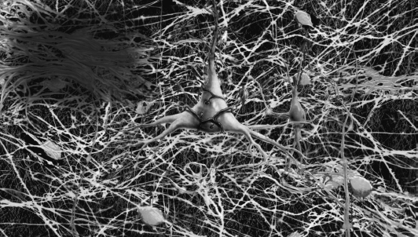

Introduction
Switch On Your Brain with Hope
Main Scripture: Faith is the substance of things hoped for, the evidence of things not seen. Hebrews 11:1
Linked Science Concept: Thoughts are real, physical things that occupy mental real estate. Moment by moment, every day, you are changing the structure of your brain through your thinking. When we hope, it is an activity of the mind that changes the structure of our brain in a positive and normal direction.
It was only a few decades ago that scientists—including those who trained me—considered the brain to be a fixed and hardwired machine. This view saw the damaged brain as incurable. They believed brain damage was hopeless and untreatable, whether the effects were from stroke, cardiovascular event, traumatic brain injury, learning disabilities, traumas, PTSD, OCD, depression, anxiety—even aging. All of these causes and conditions were seen as largely irreversible.
Because this was the presiding view of the brain, I was trained back in the ’80s to teach my patients compensation, not restoration of function. I was trained in the conventional wisdom of the time that said brain normality was an impossibility for those with mental limitations or brain damage of any kind. Being a student of the Bible, however, I was deeply familiar with and constantly comforted by Romans 12:2: “Do not conform to the pattern of this world, but be transformed by the renewing of your mind” (NIV). I knew this famous and fabulous “renewing of the mind” passage was a truth I needed to apply to my patients’ care to help them overcome their deficits. So my relentless search of this truth as a scientist began.
I was struck by how my patients, using the therapeutic techniques I was developing from my research, belied the negative picture conventional science presented of the human brain at that time. These results confirmed that the brain, far from being fixed in toxicity, can change even in the most challenging neurological situations.
I was in awe of what each patient displayed in terms of what you can do when you set your mind to it. Each new scientific study in this direction confirmed what I knew intuitively to be true: We are not victims of our biology or circumstances. How we react to the events and circumstances of life can have an enormous impact on our mental and even physical health.
As we think, we change the physical nature of our brain. As we consciously direct our thinking, we can wire out toxic patterns of thinking and replace them with healthy thoughts. New thought networks grow. We increase our intelligence and bring healing to our brains, minds, and physical bodies.
It all starts in the realm of the mind, with our ability to think and choose—the most powerful thing in the universe after God, and indeed, fashioned after God.
Healthy Memory: Adapted Graphic Sketch
Toxic Memory: Adapted Graphic Sketch

It is with our phenomenal minds that we understand the truths set down in our spirits. It is with our minds that we wire these truths into the brain, which is part of the body. It is with our minds that we choose to develop the spiritual part of who we are and “Therefore put away all filthiness and rampant wickedness and receive with meekness the implanted word, which is able to save your souls” (James 1:21 ESV). It is with our minds that we reject or believe the lies of the Enemy, the Prince of Lies. It is with our minds that we change the physical reality of the brain to reflect our choices. It is with our minds that we decide to follow God’s rules and live in peace despite what is going on around us. It is with our minds that we choose to follow the lies of Satan and spiral into mental, physical, and spiritual disarray.
Thought changes the structure of matter. God said, “Let there be light” (Gen. 1:3), and his words produced the physical earth. And science, which, again, is just catching up with the Word of God, is confirming this reality in a tangible and thought-provoking way with eminently clear accounts arising from the burgeoning field of neuroplasticity research.
Neuroplasticity by definition means the brain is malleable and adaptable, changing moment by moment of every day. Scientists are finally beginning to see the brain as having renewable characteristics (as in Rom. 12:2); it is no longer viewed as a machine that is hardwired early in life, unable to adapt, and wearing out with age. With example after fascinating example, exceptional scientists talk about and demonstrate—using brain-imaging techniques and the evidence of behavioral changes—how people can change their brains with their minds. We can see and measure the activity of the mind through the firing of neurons. We can even predict the seeming elusiveness of the main functions of the mind—that of thinking and choosing—through quantum mechanics.
I continue to find myself moving in a world of engrossing truths, and my spirit leaps inside of me. The fact that the brain is plastic and can actually be changed by the mind gives tangible hope to everyone, no matter what the circumstance. I have been privileged to work with and see:
And the list goes on.
Science is hovering on a precipice as we recognize the responsibility and impact of our thinking and the resultant choices we make, which have ramifications right down to the ways in which the genes of our bodies express themselves. Deuteronomy 30:19 is becoming a reality in the world we live in today as we begin to see the effects of choice in the brain and body: “I set before you life and death, blessing and cursing; choose life so that you and your descendants may live.”
How we think not only affects our own spirit, soul, and body but also people around us. Science and Scripture both show how the results of our decisions pass through the sperm and ova to the next four generations, profoundly affecting their choices and lifestyles. The science of epigenetics (the signals, including our thoughts, that affect the activity of our genes) explains how this plays out. This reminds me of the Scripture, “he punishes the children and their children for the sin of the parents to the third and fourth generation” (Exod. 34:7 NIV).
That the brain is plastic and can be changed moment-by-moment by how we direct our thinking—in other words, the choices we make—is a top idea on the bestseller lists, and it actually is the key to switching on our brains. Add to this the fact that every morning when you wake up, new baby nerve cells have been born while you were sleeping that are there at your disposal to be used in tearing down toxic thoughts and rebuilding healthy thoughts. The birth of these new baby nerve cells is called neurogenesis, which brings to mind, “The LORD’s mercies . . . are new every morning” (Lam. 3:23).
What a remarkable and hopeful portrait of the endless adaptivity of the human brain God has given us.
This book is divided into two parts, with the overall goal of showing you how to switch on your brain. Part 1 uncovers the keys to doing so. In part 2 you will see how all these keys work together in my 5-Step Switch On Your Brain Learning Process during my 21-Day Brain Detox Plan. Here I will lead you through a process of switching on your brain to achieve peak happiness, thinking, and health.
Here are some of the key points in this book:
All this knowledge will help you realize these truths:
If you have nodded your head at even one of these, it is time for you to be set free in your mind to pursue all God has for you. Read on. It is time for you to Switch On Your Brain and find the keys to peak happiness, thinking, and health.
In part 1, I explain through science and Scripture how the concepts described above come together.
In part 2, you will find my 21-Day Brain Detox Plan, which incorporates my scientifically proven 5-Step Switch On Your Brain technique based on my research, my years in clinical practice, and doing seminars and conferences around the world. This section is practical and filled with key, proven strategies that will help you develop a lifestyle of renewing your mind and aligning it with God’s will so your divine sense of purpose can be released (Eccles. 3:11).
You are truly designed for peak happiness, thinking, and health.
Introduction Summary